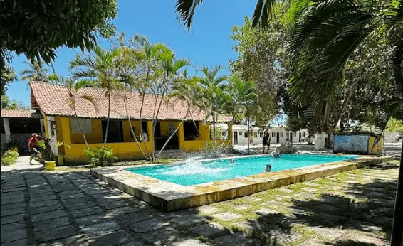
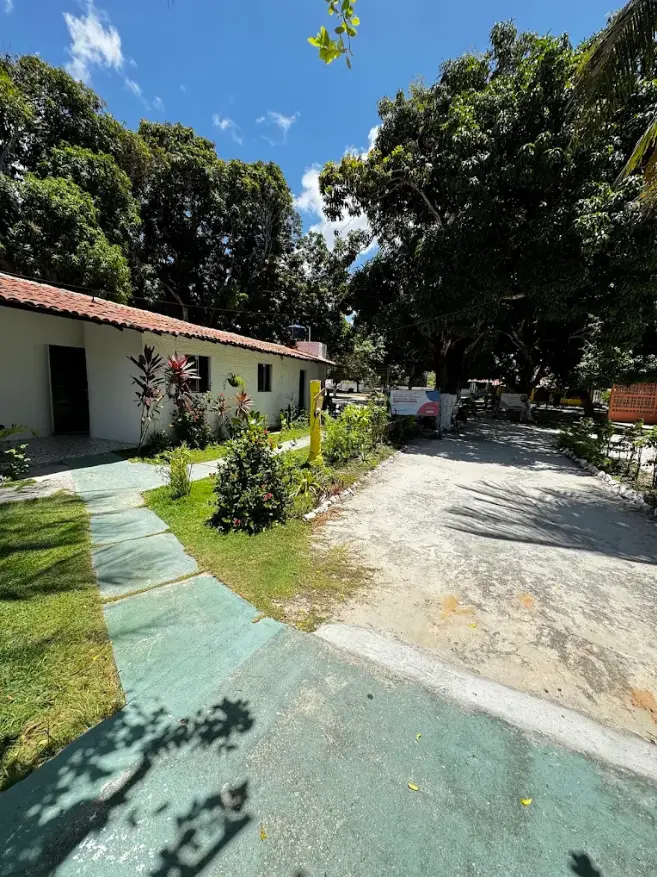
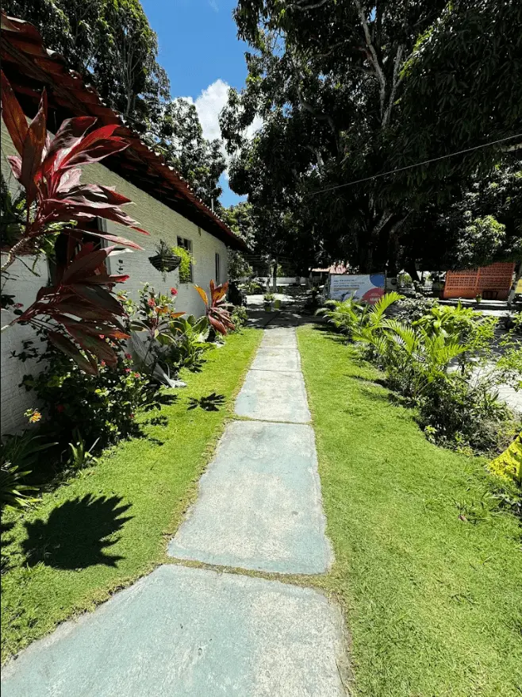
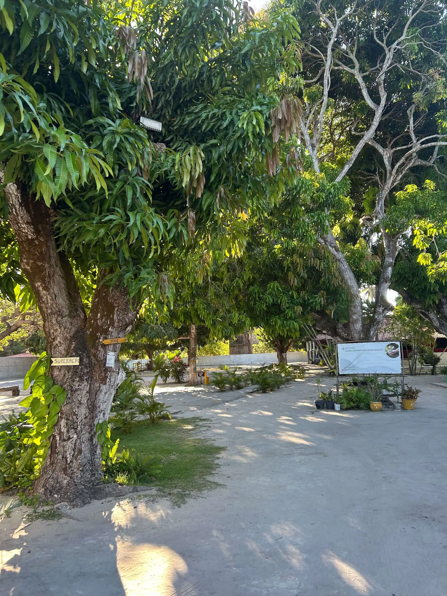
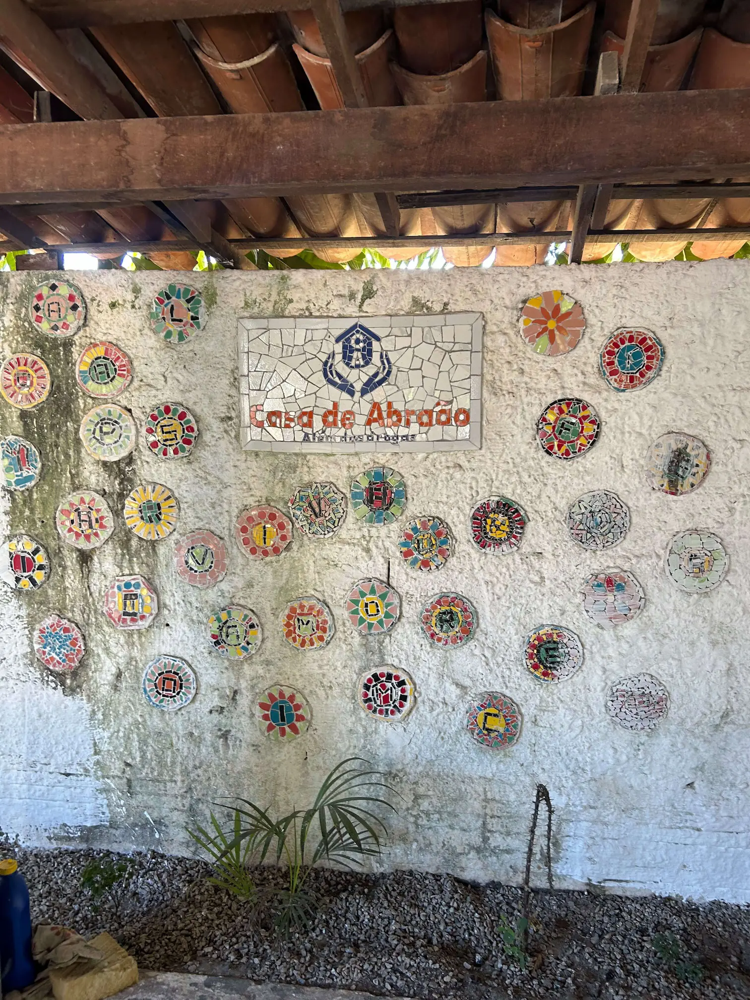
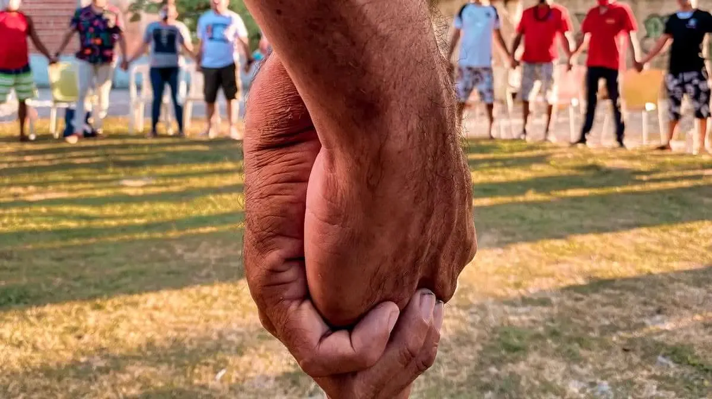
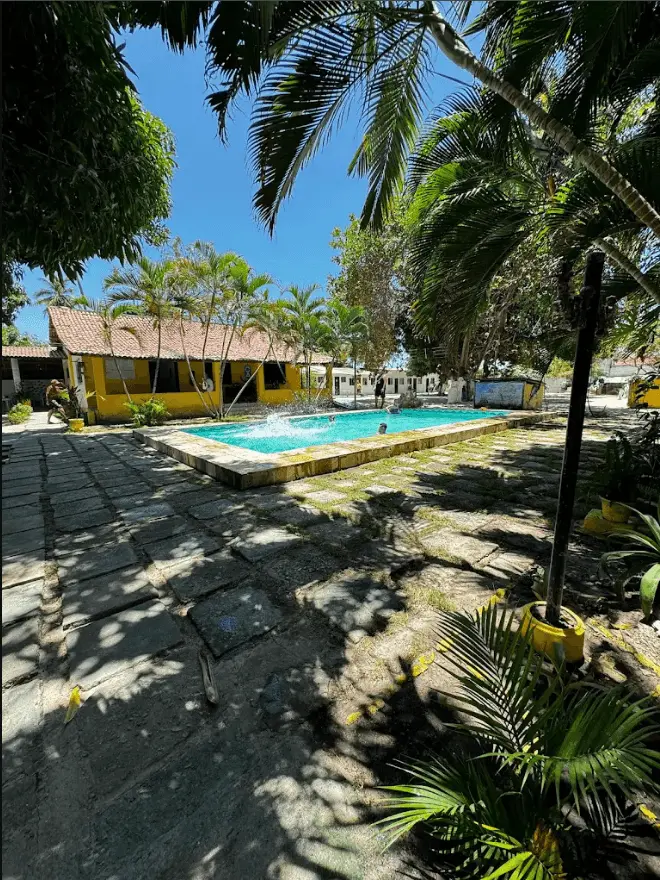

Acolhimento
Um ambiente de cuidado, convivência e apoio para pessoas em processo de recuperação.
A Casa de Abraão acolhe pessoas em processo de recuperação da dependência do álcool e de outras drogas, oferecendo cuidado, convivência, orientação e oportunidades para reconstruir caminhos com dignidade.
Mais vidas,
mais histórias,
mais recomeços.
Mais do que oferecer um espaço de permanência, buscamos proporcionar uma rotina baseada em cuidado, respeito, convivência, aprendizado e fortalecimento dos vínculos.

Um ambiente de cuidado, convivência e apoio para pessoas em processo de recuperação.
Projetos e atividades voltados à conscientização, informação, esporte, arte e cultura.
Ações que fortalecem vínculos, desenvolvem habilidades e criam novas possibilidades para a vida após o acolhimento.
Atividades que estimulam o aprendizado, autonomia e desenvolvimento pessoal e profissional.

A Associação Casa de Abraão é uma instituição sem fins lucrativos, criada em 2009, com o propósito de apoiar pessoas em situação de dependência do álcool e de outras drogas, além de suas famílias e pessoas afetadas por essa realidade.
Conheça nossas iniciativas




“Aqui eu encontrei apoio, respeito e uma nova chance de recomeçar.”
Existem diferentes formas de contribuir e ajudar a manter a Casa de Abraão funcionando.

Se você ou alguém da sua família está enfrentando problemas relacionados ao uso de álcool e outras drogas, a Casa de Abraão pode orientar sobre os próximos passos.
Ficou com dúvidas ou está pronto para dar o próximo passo? Nossa equipe está pronta para conversar com você.
Falar com a Casa